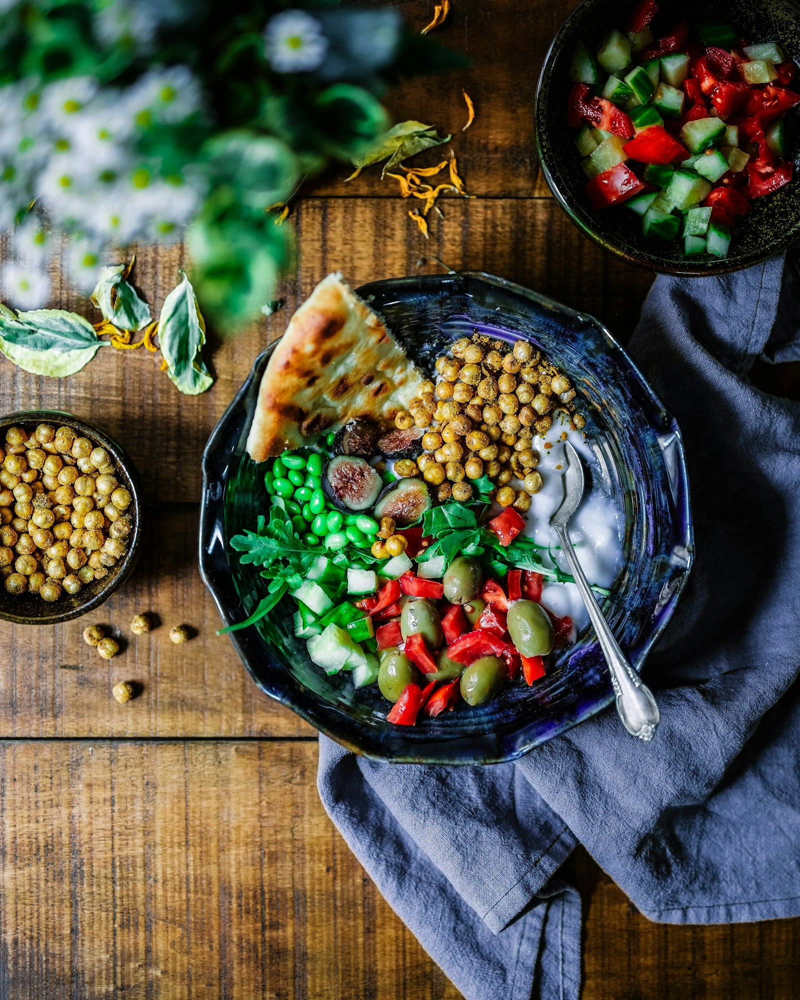
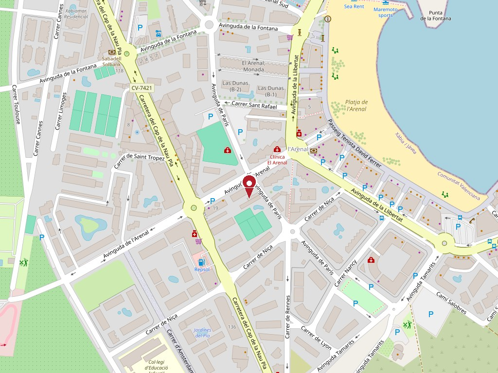

[plato]
[dish]
Espacio para un desayuno o un bowl, cuando lo confirmen.
A space for a breakfast or a bowl, once they confirm it.
[precio]Solete Guía Repsol · Cafetería
Café de desayunos y brunch en la Av. del Arenal, 18, Edificio Ancora. Esta página es una demo para mostrar cómo podría verse una web sencilla del local. No es el sitio oficial.
A breakfast and brunch café at Av. del Arenal, 18, Edificio Ancora. This page is a demo of how a simple site for the café could look. It is not the official website.

Arenal
Xàbia
Foto de stock, no del café.
Stock photo, not from the café.
01 / Mañana
No hay una carta oficial con precios en una web propia. Abajo hay placeholders, y una nota con lo que describen fichas públicas.
There is no official priced menu on a first-party website. Below are placeholders, plus a note from public listings.
Guía Repsol habla de desayunos, café, bowls de açaí, ensaladas, matcha, batidos y zumos naturales, con opciones para celíacos y opciones veganas. Hello Jávea menciona también poke y una tosta de salmón ahumado.
Guía Repsol describes breakfasts, coffee, açaí bowls, salads, matcha, smoothies and fresh juices, with gluten-free and vegan options. Hello Jávea also mentions poke and a smoked-salmon toast.
02 / Horario
El horario concreto no está confirmado aquí. Las fichas públicas no lo recogen de forma coincidente, así que conviene consultarlo en Instagram o en el local.
Specific opening hours are not confirmed here. Public listings do not agree clearly, so please check on Instagram or at the café.
| Lunes | [horario] |
|---|---|
| Martes | [horario] |
| Miércoles | [horario] |
| Jueves | [horario] |
| Viernes | [horario] |
| Sábado | [horario] |
| Domingo | [horario] |
El teléfono no aparece de forma coincidente en las fichas públicas, así que aquí se deja como [teléfono] y no hay botón de llamada ni de WhatsApp.
The phone number does not match across public listings, so it is left as [teléfono] here, with no call or WhatsApp button.
03 / Arenal

El marcador sigue el nodo de OpenStreetMap «Woody's», en la Avinguda de l'Arenal. OpenStreetMap no recoge el número de portal; las fichas públicas dan el 18, Edificio Ancora, local B. Ver mapa más grande.
The pin follows the OpenStreetMap node “Woody's”, on Avinguda de l'Arenal. OpenStreetMap has no house number; public listings give number 18, Edificio Ancora, local B. View a larger map.